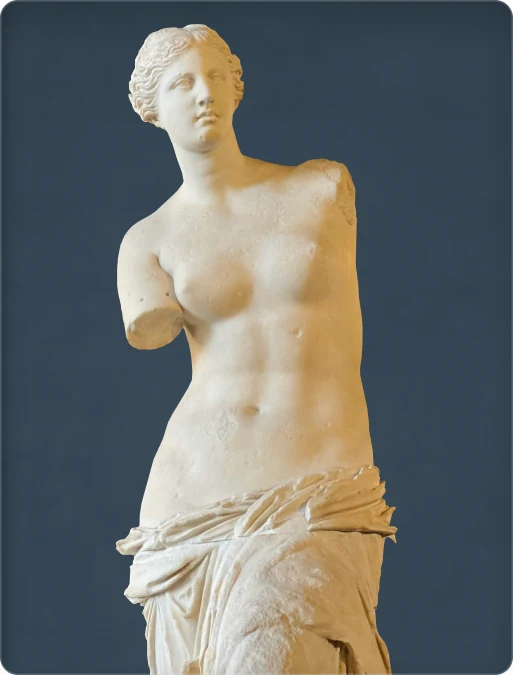

Vénus de Milo

Un buste nu, un drapé noué aux hanches
La Vénus de Milo, sculpture grecque découverte sur l’île de Mélos en 1820, montre une déesse au buste nu, le bas du corps enveloppé d’un drapé. Deux blocs de marbre de Paros s’assemblent au niveau des hanches. Généralement reconnue comme Aphrodite, elle pourrait aussi représenter Amphitrite. La disparition des bras et des attributs empêche de trancher avec certitude.
Grèce, époque hellénistique · 150–125 av. J.-C. · marbre de Paros · Musée du Louvre, Paris · inv. Ma 399
Crédit photographique
Photo : Stephanie Klepacki / Unsplash
Une silhouette en léger mouvement
Le visage se tourne légèrement, tandis que la ligne des épaules s’incline. Plus bas, un côté du buste se creuse à la taille avant que la hanche ne reprenne le mouvement. Suivez ce contour depuis le cou jusque sous le drapé. L’inclinaison de la tête, le décalage des épaules et la courbe de la hanche donnent une direction à une figure qui, au premier regard, paraît immobile. Le fond uni de la photographie aide à suivre ces inflexions.
Le marbre prend le relief d’un tissu
À hauteur des hanches, le drapé se rassemble en un bourrelet d’où partent des plis obliques et d’autres qui retombent presque à la verticale. Sur le buste, la lumière se diffuse sur des surfaces plus larges. Entre les plis, elle accroche des arêtes étroites et laisse les creux dans l’ombre. Dans un même marbre, ces reliefs distinguent la peau de l’étoffe. C’est aussi à ce niveau que se rejoignent les deux blocs dont la statue est composée.
Les bras manquants
Le bras interrompu près de l’épaule et celui qui subsiste un peu plus bas délimitent la silhouette d’aujourd’hui. Repérez leurs extrémités, puis revenez au visage et à la taille. La direction du regard et la tension du drapé donnent quelques indices sur l’attitude de la figure. La position des mains aurait pu préciser le geste, donner une direction au regard ou expliquer un pli. Les surfaces cassées laissent ces rapports ouverts à plusieurs lectures.
Aphrodite ou Amphitrite
Aphrodite est l’identification la plus répandue. Amphitrite reste une autre possibilité. Devant la photographie, il est facile de reconnaître la statue parce que sa silhouette est familière. Identifier la déesse représentée demande d’autres indices, notamment les objets qu’elle aurait pu tenir. Le nom Vénus de Milo permet de désigner la sculpture pendant que cette question reste ouverte. La référence au Louvre permet de retrouver la fiche de la statue sous ce nom et de consulter les repères donnés par le musée.